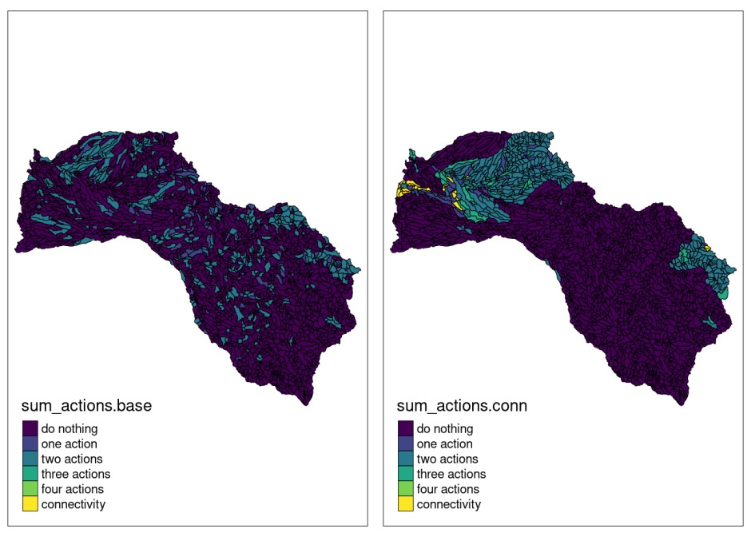

In this vignette, the prioriactions package is introduced in a real context, demonstrating part of its capabilities in order to familiarize the reader with it. The vignette is divided into three parts: the first shows a base case; which consists of prioritizing management actions while minimizing costs and, in turn, achieves certain recovery targets; the second part incorporates other curves in the calculation of benefits, while the third adds spatial requirements using the blm and blm_actions parameters.
The Mitchell River is a river located in Northern Queensland, Australia. The headwaters of the Mitchell River are in the Atherton Tableland about 50 kilometres (31 mi) northwest of Cairns, and flows about 750 kilometres (470 mi) northwest across Cape York Peninsula from Mareeba to the Gulf of Carpentaria. We will use this case study to present some functionalities of the prioriactions package.
We started loading libraries:
# load packages
library(prioriactions)
library(raster) #To plot of shapefiles
library(tmap) #To create cool maps
library(scales) #To standardize the value of amount
library(reshape2) #To use the melt function
library(sp) #To use the spplot function
library(viridis) #To use viridis pallete1) Preparing and analyzing input data
We divided the whole catchment (71,630 \(km^2\)) into 2316 sites (i.e., sub-catchments), each one included the portion of river length between two consecutive river connections and the surrounding land draining into this river stretch. We sourced the distribution of 45 fish species in the Mitchell river catchment as our conservation features [@cattarino2015]. Also, we considered four major threats to freshwater fish species in the catchment: water buffalo (Bubalis bubalis), cane toad (Bufo marinus), river flow alteration (caused by infrastructure for water extractions and levee banks) and grazing land use . All input files will be loaded directly into the prioriactions package as follows:
path <- system.file("extdata/mitchell_vignette_data/",
package = "prioriactions")
pu_data <- data.table::fread(file = paste0(path,
"/pu_mitchell.csv"),
data.table = FALSE)
features_data <- data.table::fread(file = paste0(path,
"/features_mitchell.csv"),
data.table = FALSE)
dist_features_data <- data.table::fread(file = paste0(path,
"/dist_features_mitchell.csv"),
data.table = FALSE)
threats_data <- data.table::fread(file = paste0(path,
"/threats_mitchell.csv"),
data.table = FALSE)
dist_threats_data <- data.table::fread(file = paste0(path,
"/dist_threats_mitchell.csv"),
data.table = FALSE)
bound_data <- data.table::fread(file = paste0(path,
"/boundary_mitchell.csv"),
data.table = FALSE)
sensitivity_data <- data.table::fread(file = paste0(path,
"/sensibility_mitchell.csv"),
data.table = FALSE)We load the shapefile of the case study also included as part of the package installation:

After loading the instance’s data, we can plot different distributions of features or threats on the shapefile loaded. To do it, we can assign the values from tabular input to any of the fields in the shapefile containing the distribution of native species and threats:
# load amount of dist_features data
dist_features <- reshape2::dcast(dist_features_data,
pu~feature,
value.var = "amount",
fill = 0)
# assign the distribution of first feature to feature_distribution field
# in the shapefile
mit_pu$feature_distribution <- dist_features[, 2]
# plot distribution with tmap library
tmap::tm_shape(mit_pu) +
tmap::tm_fill("feature_distribution",
pal = c("white", "seagreen"),
labels = c("0", "1"),
breaks = c(0,1,2)) +
tmap::tm_borders(col="black",
lwd = 0.5)Likewise, we can plot the distributions of any threats by applying the following instructions:
# load amount of dist_threats data
dist_threats <- reshape2::dcast(dist_threats_data,
pu~threat,
value.var = "amount",
fill = 0)
# assign the distribution of third threat to feature_distribution field
# in the shapefile
mit_pu$threat_distribution <- dist_threats[, 4]
# plot distribution with tmap library
tmap::tm_shape(mit_pu) +
tmap::tm_fill("threat_distribution",
pal = c("white", "red4"),
labels = c("0", "1"),
breaks = c(0,1,2)) +
tmap::tm_borders(col="black",
lwd = 0.5)To solve all the models, the solver will be configured with a stop criterion of 5% of gap (gap_limit = 0.05), which means that the solver will end its execution when it finds a solution whose gap is at least 5%, indicating 0% that this solution is optimal. Similarly, there are other stopping criteria such as the time (time_limit), all available in the solve() reference. There is also the option of not using any stopping criteria that will make the solver run until it finds an optimal solution; however, this could take a long time period.
In Section 2, we present the results obtained when solving the base model for the case study. Likewise, in Section 3 we report the results obtained when incorporating the different curves in the benefit calculation. And finally, in Section 4 we present the results obtained when incorporating the connectivity requirements to the model.
2) Base model
First, our base model considers the prioritization of management actions to abate a particular threat using previously loaded data. Note that for both features and threats we have presence/absence values (binary values). Some of the characteristics of the base model are the following:
- We use
minimiCoststype of model to minimize costs for reaching 15% of the maximum recovery benefit per feature as target. - The model does not consider spatial requirements (blm and blm_actions parameters are equal to 0).
- There is no need of solving all threats impacting a particular species in a given planning unit to achieve secure the persistence of the species in that planning unit (i.e., the curve parameter is equal to 1).
To proceed we follow the three-step scheme described in the prioriactions package: 1) data validation, 2) model creation and 3) model optimization.
# step 1: data validation
input_data <- inputData(pu = pu_data,
features = features_data,
dist_features = dist_features_data,
threats = threats_data,
dist_threats = dist_threats_data,
sensitivity = sensitivity_data,
bound = bound_data)
input_data## Data
## planning units: data.frame (2316 units)
## monitoring costs: min: 1, max: 1
## features: scl_ja, nem_er, thr_sc, ... (45 features)
## threats: threat1, threat2, threat3, threat4 (4 threats)
## action costs: min: 1, max: 1Now, in order to set the recovery targets at 20%, we must know what is the maximum recovery benefit possible through the getPotentialBenefit() function.
# view the maximum benefit to achieve
maximum_benefits <- getPotentialBenefit(input_data)
head(maximum_benefits)## feature dist dist_threatened maximum.conservation.benefit maximum.recovery.benefit maximum.benefit
## 1 1 692 692 0 692 692
## 2 2 1052 1052 0 1052 1052
## 3 3 416 416 0 416 416
## 4 4 653 653 0 653 653
## 5 5 238 238 0 238 238
## 6 6 276 276 0 276 276We assign the new target (20% of maximum) to the corresponding column of the feature data input and create the object Data-class again.
features_data$target_recovery <- maximum_benefits$maximum.recovery.benefit * 0.2
# step 1: validate modified data
input_data <- inputData(pu = pu_data,
features = features_data,
dist_features = dist_features_data,
threats = threats_data,
dist_threats = dist_threats_data,
sensitivity = sensitivity_data,
bound = bound_data)
input_data## Data
## planning units: data.frame (2316 units)
## monitoring costs: min: 1, max: 1
## features: scl_ja, nem_er, thr_sc, ... (45 features)
## threats: threat1, threat2, threat3, threat4 (4 threats)
## action costs: min: 1, max: 1Once the input data is validated, we proceed to create the mathematical model using the problem() function with curve = 1.
# step 2:
model.base <- problem(input_data,
model_type = "minimizeCosts",
blm = 0)## Warning: The blm argument was set to 0, so the boundary data has no effect## Warning: Some blm_actions argument were set to 0, so the boundary data has no effect for these cases
model.base## Optimization Problem
## model sense: minimization
## dimensions: 37371, 43180, 1813.016 kB (nrow, ncol, size)
## variables: 43180Note that the dimension of the model are 37371 mathematical constraints and 43180 variables. By using the getModelInfo() function, we can display additional information of the model:
getModelInfo(model.base)## model_sense n_constraints n_variables size
## 1 minimization 37371 43180 1813.016 kBTo solve the corresponding model, the solver is set considering a 5% optimality gap as stopping criterion (note that a 0% gap means that the problem is solved to optimality) and using gurobi solver. In turn, the verbose = TRUE is used to display the execution of the solver and the output_file = FALSE to avoid generating output files with the results.
# step 3:
solution.base <- solve(model.base,
gap_limit = 0.05,
verbose = TRUE,
output_file = FALSE,
cores = 2)## Gurobi Optimizer version 9.1.2 build v9.1.2rc0 (linux64)
## Thread count: 2 physical cores, 4 logical processors, using up to 2 threads
## Optimize a model with 37371 rows, 43180 columns and 136566 nonzeros
## Model fingerprint: 0xc61c114a
## Variable types: 34965 continuous, 8215 integer (8215 binary)
## Coefficient statistics:
## Matrix range [3e-01, 4e+00]
## Objective range [1e+00, 1e+00]
## Bounds range [1e+00, 1e+00]
## RHS range [1e+00, 4e+02]
## Found heuristic solution: objective 7947.0000000
## Found heuristic solution: objective 6638.0000000
## Presolve removed 35017 rows and 35259 columns
## Presolve time: 0.25s
## Presolved: 2354 rows, 7921 columns, 66284 nonzeros
## Variable types: 0 continuous, 7921 integer (7904 binary)
##
## Root relaxation: objective 1.145583e+03, 4158 iterations, 0.09 seconds
##
## Nodes | Current Node | Objective Bounds | Work
## Expl Unexpl | Obj Depth IntInf | Incumbent BestBd Gap | It/Node Time
##
## 0 0 1145.58333 0 547 6638.00000 1145.58333 82.7% - 0s
## H 0 0 1396.0000000 1145.58333 17.9% - 0s
## H 0 0 1393.0000000 1145.58333 17.8% - 0s
## 0 0 1173.77778 0 712 1393.00000 1173.77778 15.7% - 0s
## H 0 0 1369.0000000 1173.77778 14.3% - 0s
## 0 0 1175.01235 0 696 1369.00000 1175.01235 14.2% - 1s
## 0 0 1175.12963 0 691 1369.00000 1175.12963 14.2% - 1s
## 0 0 1222.36111 0 479 1369.00000 1222.36111 10.7% - 1s
## H 0 0 1333.0000000 1222.36111 8.30% - 1s
## 0 0 1225.44444 0 469 1333.00000 1225.44444 8.07% - 1s
## 0 0 1225.44444 0 472 1333.00000 1225.44444 8.07% - 1s
## 0 0 1241.19444 0 305 1333.00000 1241.19444 6.89% - 1s
## 0 0 1242.75000 0 292 1333.00000 1242.75000 6.77% - 1s
## 0 0 1242.75000 0 291 1333.00000 1242.75000 6.77% - 1s
## 0 0 1271.33333 0 68 1333.00000 1271.33333 4.63% - 1s
##
## Cutting planes:
## Gomory: 1
## Cover: 1214
## Clique: 11
## MIR: 482
## StrongCG: 1
## RLT: 2
##
## Explored 1 nodes (14581 simplex iterations) in 1.58 seconds
## Thread count was 2 (of 4 available processors)
##
## Solution count 6: 1333 1369 1393 ... 7947
##
## Optimal solution found (tolerance 5.00e-02)
## Best objective 1.333000000000e+03, best bound 1.272000000000e+03, gap 4.5761%We have achieved a gap of 4.57% and a objective value of 1333 in a a time of 2.88 seconds. This and other relevant information can be obtained from the getPerformance() function:
getPerformance(solution.base)## solution_name objective_value gap solving_time status
## 1 sol 1333 4.576 1.58 Optimal solution (according to gap tolerance: 0.05)Since our objective function does not contain the connectivity component (because both blm and blm_actions were set to zero), the objective value corresponds to the sum of all actions and monitoring costs. We can check these using the getCost() function:
getCost(solution.base) ## solution_name monitoring threat_1 threat_2 threat_3 threat_4
## 1 sol 486 0 395 0 452This shows that the actions with the highest total cost correspond to those that go against the threat 4, and then those corresponding to monitoring.
We use the getActions() function to get the distribution of conservation actions. Note that because we only set recovery targets we use a recovery target planning propose, there are only planning units selected for prescribing management actions against threats, while there are no planning units selected for conservation. There are no planning units selected for connectivity as both blm and blm_actions were set to zero.
# get actions distribution
solution_actions.base <- getActions(solution.base)
head(solution_actions.base)## solution_name pu 1 2 3 4 conservation connectivity
## 1 sol 1 0 0 0 0 0 0
## 2 sol 2 0 0 0 0 0 0
## 3 sol 3 0 1 0 1 0 0
## 4 sol 4 0 0 0 0 0 0
## 5 sol 5 0 0 0 0 0 0
## 6 sol 6 0 1 0 1 0 0In the same way that we plot the distributions of species and threats, we can also explore the spatial distribution of management actions included in the optimal solution:
# assign solution to shapefile field to plot it
mit_pu$action_1.base <- solution_actions.base$`1`
mit_pu$action_2.base <- solution_actions.base$`2`
mit_pu$action_3.base <- solution_actions.base$`3`
mit_pu$action_4.base <- solution_actions.base$`4`
# actions plots
plot_action1.base <- tmap::tm_shape(mit_pu) +
tmap::tm_fill("action_1.base",
pal = c("white", "dodgerblue4"),
labels = c("0", "1"),
breaks = c(0,1,2)) +
tmap::tm_borders(col="black",
lwd = 0.5)
plot_action2.base <- tmap::tm_shape(mit_pu) +
tmap::tm_fill("action_2.base",
pal = c("white", "dodgerblue4"),
labels = c("0", "1"),
breaks = c(0,1,2)) +
tmap::tm_borders(col="black",
lwd = 0.5)
plot_action3.base <- tmap::tm_shape(mit_pu) +
tmap::tm_fill("action_3.base",
pal = c("white", "dodgerblue4"),
labels = c("0", "1"),
breaks = c(0,1,2)) +
tmap::tm_borders(col="black",
lwd = 0.5)
plot_action4.base <- tmap::tm_shape(mit_pu) +
tmap::tm_fill("action_4.base",
pal = c("white", "dodgerblue4"),
labels = c("0", "1"),
breaks = c(0,1,2)) +
tmap::tm_borders(col="black",
lwd = 0.5)
tmap::tmap_arrange(plot_action1.base,
plot_action2.base,
plot_action3.base,
plot_action4.base)Also, we can show the distribution of the sum of the actions (higher density of actions):
mit_pu$sum_actions.base <- solution_actions.base$`1` +
solution_actions.base$`2` +
solution_actions.base$`3` +
solution_actions.base$`4` +
solution_actions.base$connectivity*5
# plot sum of actions with tmap library
plot.base <- tmap::tm_shape(mit_pu) +
tmap::tm_fill("sum_actions.base",
palette="viridis",
labels = c("do nothing",
"one action",
"two actions",
"three actions",
"four actions",
"connectivity"),
breaks = c(0,1,2,3,4,5,6)) +
tmap::tm_borders(col="black",
lwd = 0.5)
plot.baseWe will use the results from this base model for comparisons with the following planning exercises.
3) Model with different curve param
This model differs from the previous one in that it tries to group conservation actions within the selected sites as part of the management plan (through a non-linear relationship in the calculation of benefits). This would be desirable when all or most of threats impacting a given species needed to be abated to ensure it long-term persistence (e.g., a species is highly sensitive to all the threats in a planning unit). The latter is done by adding a value other than 1 to the curve parameter. Where: (1) indicates that there is a linear relationship between the ratio between the actions carried out with respect to the possible actions to be carried out with respect to the benefit obtained by a characteristic so all actions are considered equally important, not being the species specially sensitive to any of them. (2) indicates a quadratic relationship between these values, and (3) a cubic relationship. The number of segments refers to the number of smaller portions in which the curve is divided to linealize it. Larger values of segments result in more complex models.
model.curve <- prioriactions::problem(input_data,
model_type = "minimizeCosts",
blm = 0,
curve = 3,
segments = 5)## Warning: The blm argument was set to 0, so the boundary data has no effect## Warning: Some blm_actions argument were set to 0, so the boundary data has no effect for these cases
model.curve## Optimization Problem
## model sense: minimization
## dimensions: 37371, 78145, 1952.872 kB (nrow, ncol, size)
## variables: 78145Note that the new model associates a larger instance (from 43180 to 78145 variables) when compared to the previously presented model. As a consequence, the resulting problem is computationally more difficult. The solution of the resulting model has a objective function value equal to 1336 (greater than the previous one), although the corresponding optimality gap is 4.79% (similar than the one attained for the simple model). The complete output of the solver is shown below:
solution.curve <- prioriactions::solve(model.curve,
gap_limit = 0.05,
verbose = TRUE,
output_file = FALSE,
cores = 2)## Gurobi Optimizer version 9.1.2 build v9.1.2rc0 (linux64)
## Thread count: 2 physical cores, 4 logical processors, using up to 2 threads
## Optimize a model with 37371 rows, 78145 columns and 136566 nonzeros
## Model fingerprint: 0x727af3a5
## Model has 34965 general constraints
## Variable types: 69930 continuous, 8215 integer (8215 binary)
## Coefficient statistics:
## Matrix range [3e-01, 4e+00]
## Objective range [1e+00, 1e+00]
## Bounds range [1e+00, 1e+00]
## RHS range [1e+00, 4e+02]
## Found heuristic solution: objective 8215.0000000
## Presolve added 69869 rows and 174524 columns
## Presolve time: 0.78s
## Presolved: 107240 rows, 252669 columns, 695592 nonzeros
## Presolved model has 34965 SOS constraint(s)
## Found heuristic solution: objective 7947.0000000
## Variable types: 244742 continuous, 7927 integer (7911 binary)
##
## Deterministic concurrent LP optimizer: primal and dual simplex
## Showing first log only...
##
##
## Root simplex log...
##
## Iteration Objective Primal Inf. Dual Inf. Time
## 52139 2.7269611e+03 0.000000e+00 1.876868e+04 5s
## 77100 2.2476995e+03 0.000000e+00 1.868763e+04 10s
## 93792 2.0070600e+03 0.000000e+00 1.542965e+04 15s
## Concurrent spin time: 0.01s
##
## Solved with dual simplex
##
## Root relaxation: objective 1.144050e+03, 54270 iterations, 14.95 seconds
## Total elapsed time = 21.11s
##
## Nodes | Current Node | Objective Bounds | Work
## Expl Unexpl | Obj Depth IntInf | Incumbent BestBd Gap | It/Node Time
##
## 0 0 1144.05000 0 6203 7947.00000 1144.05000 85.6% - 22s
## H 0 0 7924.0000000 1144.05000 85.6% - 23s
## 0 0 1148.84167 0 8970 7924.00000 1148.84167 85.5% - 28s
## H 0 0 2094.0000000 1148.84167 45.1% - 32s
## 0 0 1162.52272 0 11530 2094.00000 1162.52272 44.5% - 37s
## 0 0 1187.87778 0 6309 2094.00000 1187.87778 43.3% - 43s
## 0 0 1201.60000 0 5121 2094.00000 1201.60000 42.6% - 46s
## 0 0 1201.60000 0 5072 2094.00000 1201.60000 42.6% - 46s
## 0 0 1205.21667 0 5214 2094.00000 1205.21667 42.4% - 51s
## 0 0 1221.05556 0 5864 2094.00000 1221.05556 41.7% - 54s
## 0 0 1245.76667 0 3135 2094.00000 1245.76667 40.5% - 59s
## 0 0 1247.26667 0 2809 2094.00000 1247.26667 40.4% - 61s
## 0 0 1247.26667 0 3125 2094.00000 1247.26667 40.4% - 63s
## 0 0 1269.26667 0 3240 2094.00000 1269.26667 39.4% - 69s
## H 0 0 1472.0000000 1269.26667 13.8% - 79s
## 0 0 1269.26667 0 2501 1472.00000 1269.26667 13.8% - 81s
## 0 0 1269.92292 0 2699 1472.00000 1269.92292 13.7% - 86s
## 0 0 1270.83333 0 1876 1472.00000 1270.83333 13.7% - 88s
## 0 0 1270.83333 0 1741 1472.00000 1270.83333 13.7% - 88s
## 0 0 1272.00000 0 2068 1472.00000 1272.00000 13.6% - 92s
## H 0 0 1371.0000000 1272.00000 7.22% - 103s
## 0 0 1272.00000 0 1726 1371.00000 1272.00000 7.22% - 105s
## 0 0 1272.00000 0 2194 1371.00000 1272.00000 7.22% - 109s
## 0 0 1272.00000 0 1548 1371.00000 1272.00000 7.22% - 123s
## H 0 0 1353.0000000 1272.00000 5.99% - 141s
## H 0 0 1348.0000000 1272.00000 5.64% - 151s
## 0 2 1272.00000 0 1537 1348.00000 1272.00000 5.64% - 154s
## 1 4 1272.00000 1 1672 1348.00000 1272.00000 5.64% 4286 156s
## 5 8 1272.00000 2 1772 1348.00000 1272.00000 5.64% 2175 163s
## 7 10 1272.00000 3 1883 1348.00000 1272.00000 5.64% 2229 165s
## 17 26 1272.00000 5 1793 1348.00000 1272.00000 5.64% 1052 171s
## 25 42 1272.00000 9 1689 1348.00000 1272.00000 5.64% 769 183s
## H 27 42 1344.0000000 1272.00000 5.36% 725 183s
## 41 86 1272.00000 16 1691 1344.00000 1272.00000 5.36% 494 207s
## H 62 86 1341.0000000 1272.00000 5.15% 371 207s
## H 84 86 1340.0000000 1272.00000 5.07% 298 207s
## 85 178 1272.00000 34 1689 1340.00000 1272.00000 5.07% 295 233s
## H 108 178 1339.0000000 1272.00000 5.00% 245 233s
## H 111 178 1338.0000000 1272.00000 4.93% 239 233s
##
## Cutting planes:
## Cover: 1439
## Implied bound: 29488
## Clique: 144
## MIR: 426
## Flow cover: 3219
## Network: 4
## RLT: 2
## Relax-and-lift: 12413
##
## Explored 177 nodes (219985 simplex iterations) in 233.32 seconds
## Thread count was 2 (of 4 available processors)
##
## Solution count 10: 1338 1339 1340 ... 2094
##
## Optimal solution found (tolerance 5.00e-02)
## Warning: max constraint violation (1.3502e-02) exceeds tolerance
## Warning: max general constraint violation (1.3502e-02) exceeds tolerance
## (model may be infeasible or unbounded - try turning presolve off)
## Best objective 1.338000000000e+03, best bound 1.272000000000e+03, gap 4.9327%Note that the last solution was reached in 177326 seconds. This specifically demonstrates how complexity increases when using the different parameters of curves.
# get action distribution
solution_actions.curve <- prioriactions::getActions(solution.curve)
# assign solution to shapefile field to plot it
mit_pu$action_1.curve <- solution_actions.curve$`1`
mit_pu$action_2.curve <- solution_actions.curve$`2`
mit_pu$action_3.curve <- solution_actions.curve$`3`
mit_pu$action_4.curve <- solution_actions.curve$`4`
mit_pu$sum_actions.curve <- solution_actions.curve$`1` +
solution_actions.curve$`2` +
solution_actions.curve$`3` +
solution_actions.curve$`4` +
solution_actions.curve$connectivity*5
# plot sum of actions with tmap library
plot.curve <- tmap::tm_shape(mit_pu) +
tmap::tm_fill("sum_actions.curve",
palette="viridis",
labels = c("do nothing",
"one action",
"two actions",
"three actions",
"four actions",
"connectivity"),
breaks = c(0,1,2,3,4,5,6)) +
tmap::tm_borders(col="black",
lwd = 0.5)
# comparative with base model solution
tmap::tmap_arrange(plot.base, plot.curve)Here, we display representations of the solution obtained for both, the base and curve models. As can be seen from these maps there are a greater number of sites with a larger concentration of management actions compared to the previous model (for example, a greater number of units in green).
4) Model with connectivity requirements
To add connectivity requirements to the model, there are two key parameters: blm (equivalent to the parameter blm used in marxan), which tries to minimize the connectivity penalty between the selected planning units (i.e. regardless if conservation actions are carried out within them).
In the following we explore how solutions change when adding connectivity requirements.
input_data.conn <- inputData(pu = pu_data,
features = features_data,
dist_features = dist_features_data,
threats = threats_data,
dist_threats = dist_threats_data, sensitivity = sensitivity_data,
bound = bound_data)
model.conn <- problem(input_data.conn,
model_type = "minimizeCosts",
blm = 5,
curve = 1)## Warning: Some blm_actions argument were set to 0, so the boundary data has no effect for these cases
solution.conn <- solve(model.conn,
gap_limit = 0.05,
verbose = TRUE,
output_file = FALSE,
cores = 2)## Gurobi Optimizer version 9.1.2 build v9.1.2rc0 (linux64)
## Thread count: 2 physical cores, 4 logical processors, using up to 2 threads
## Optimize a model with 78567 rows, 56912 columns and 232690 nonzeros
## Model fingerprint: 0x5fa5d86a
## Variable types: 34965 continuous, 21947 integer (21947 binary)
## Coefficient statistics:
## Matrix range [3e-01, 4e+00]
## Objective range [1e+00, 6e+01]
## Bounds range [1e+00, 1e+00]
## RHS range [1e+00, 4e+02]
## Found heuristic solution: objective 7947.0000000
## Presolve removed 35010 rows and 35250 columns
## Presolve time: 0.44s
## Presolved: 43557 rows, 21662 columns, 162430 nonzeros
## Variable types: 0 continuous, 21662 integer (21646 binary)
##
## Deterministic concurrent LP optimizer: primal and dual simplex
## Showing first log only...
##
##
## Root simplex log...
##
## Iteration Objective Primal Inf. Dual Inf. Time
## 34261 1.6462609e+03 0.000000e+00 1.224723e+04 5s
## Concurrent spin time: 0.00s
##
## Solved with dual simplex
##
## Root relaxation: objective 1.246656e+03, 17330 iterations, 8.14 seconds
##
## Nodes | Current Node | Objective Bounds | Work
## Expl Unexpl | Obj Depth IntInf | Incumbent BestBd Gap | It/Node Time
##
## 0 0 1246.65555 0 14894 7947.00000 1246.65555 84.3% - 10s
## H 0 0 3698.1750000 1246.65555 66.3% - 10s
## H 0 0 3596.0050000 1246.65555 65.3% - 10s
## 0 0 1309.93713 0 16243 3596.00500 1309.93713 63.6% - 24s
## 0 0 1439.10567 0 10246 3596.00500 1439.10567 60.0% - 33s
## H 0 0 3516.8050000 1439.10567 59.1% - 33s
## 0 0 1445.28767 0 10627 3516.80500 1445.28767 58.9% - 37s
## 0 0 1448.58070 0 10616 3516.80500 1448.58070 58.8% - 37s
## 0 0 1451.95708 0 10273 3516.80500 1451.95708 58.7% - 38s
## 0 0 1453.67899 0 10278 3516.80500 1453.67899 58.7% - 41s
## H 0 0 3395.0450000 1453.67899 57.2% - 41s
## 0 0 1455.14266 0 10282 3395.04500 1455.14266 57.1% - 41s
## 0 0 1455.14286 0 10280 3395.04500 1455.14286 57.1% - 41s
## 0 0 1456.20718 0 10336 3395.04500 1456.20718 57.1% - 45s
## 0 0 1459.99389 0 10267 3395.04500 1459.99389 57.0% - 48s
## H 0 0 3309.2750000 1459.99389 55.9% - 49s
## 0 0 1459.99389 0 10268 3309.27500 1459.99389 55.9% - 49s
## 0 0 1461.98299 0 10272 3309.27500 1461.98299 55.8% - 49s
## 0 0 1462.38513 0 10269 3309.27500 1462.38513 55.8% - 50s
## H 0 0 3228.9150000 1462.38513 54.7% - 50s
## 0 0 1462.54676 0 10270 3228.91500 1462.54676 54.7% - 51s
## 0 0 1463.90458 0 10278 3228.91500 1463.90458 54.7% - 52s
## H 0 0 3202.0750000 1463.90458 54.3% - 52s
## 0 0 1463.90499 0 10278 3202.07500 1463.90499 54.3% - 52s
## 0 0 1463.95170 0 10271 3202.07500 1463.95170 54.3% - 53s
## H 0 0 3159.7400000 1463.95170 53.7% - 53s
## 0 0 1463.95444 0 10269 3159.74000 1463.95444 53.7% - 53s
## 0 0 1463.95444 0 10259 3159.74000 1463.95444 53.7% - 59s
## H 0 0 2681.2700000 1463.98668 45.4% - 63s
## H 0 0 2669.5000000 1463.98668 45.2% - 64s
## H 0 2 2663.2400000 1463.98668 45.0% - 64s
## 0 2 1463.98668 0 10258 2663.24000 1463.98668 45.0% - 64s
## 1 4 1479.00207 1 10266 2663.24000 1463.98668 45.0% 2422 67s
## 3 6 1485.05504 2 10506 2663.24000 1470.82439 44.8% 2547 72s
## 5 8 1497.89727 2 11879 2663.24000 1470.89149 44.8% 3705 78s
## 7 10 1489.66829 3 9823 2663.24000 1477.28291 44.5% 3020 80s
## 11 14 1500.40849 4 9901 2663.24000 1489.69722 44.1% 2744 86s
## 13 16 1525.41094 4 9311 2663.24000 1492.54486 44.0% 3116 92s
## 17 21 1538.21142 5 9950 2663.24000 1495.32210 43.9% 3237 96s
## 24 27 1532.40163 7 8478 2663.24000 1495.32210 43.9% 2899 102s
## H 26 32 2641.8200000 1495.32210 43.4% 2778 105s
## H 29 32 1620.4800000 1495.32210 7.72% 2617 105s
## 33 40 1545.13627 9 9169 1620.48000 1495.32210 7.72% 2574 110s
## 43 50 1554.53682 13 7430 1620.48000 1495.32210 7.72% 2249 117s
## 55 61 1609.51801 19 5050 1620.48000 1495.32210 7.72% 2170 122s
## H 56 61 1615.4100000 1495.32210 7.43% 2132 122s
## H 57 61 1604.9900000 1495.32210 6.83% 2126 122s
## 66 73 1579.91224 21 6348 1604.99000 1495.32210 6.83% 1957 126s
## 82 82 1590.35993 26 5939 1604.99000 1495.32210 6.83% 1742 131s
## H 88 91 1602.9900000 1495.32210 6.72% 1761 133s
## 97 96 cutoff 28 1602.99000 1495.36416 6.71% 1609 136s
## 114 99 1531.50176 4 5624 1602.99000 1495.36416 6.71% 1583 141s
## 122 110 1535.54610 6 5703 1602.99000 1495.36416 6.71% 1589 150s
## 153 136 1543.17555 9 3290 1602.99000 1495.36416 6.71% 1468 157s
## H 171 112 1589.1600000 1495.36416 5.90% 1338 160s
## 184 116 1548.70522 12 2616 1589.16000 1495.36416 5.90% 1291 166s
## 198 116 1572.42119 17 2476 1589.16000 1495.36416 5.90% 1361 175s
## H 199 116 1588.1600000 1495.36416 5.84% 1354 175s
## 210 124 1579.00047 23 2452 1588.16000 1498.01688 5.68% 1418 184s
## 226 127 1518.05974 4 6270 1588.16000 1498.01688 5.68% 1426 189s
## 241 136 1526.96262 6 5569 1588.16000 1498.01688 5.68% 1400 194s
## 250 141 1542.67287 8 3703 1588.16000 1498.01688 5.68% 1436 198s
## 255 147 1555.54545 10 3384 1588.16000 1498.01688 5.68% 1469 205s
## 261 157 1563.94638 13 2923 1588.16000 1498.01688 5.68% 1491 210s
## 273 169 1582.15750 19 569 1588.16000 1498.01688 5.68% 1487 215s
## H 285 161 1583.4950000 1498.01688 5.40% 1429 215s
## 298 150 cutoff 32 1583.49500 1504.40589 4.99% 1404 243s
## H 306 140 1582.4950000 1504.42814 4.93% 1392 243s
##
## Cutting planes:
## Gomory: 2
## Cover: 1
## MIR: 1
## Zero half: 10
## Mod-K: 1
## RLT: 92
##
## Explored 307 nodes (487058 simplex iterations) in 243.79 seconds
## Thread count was 2 (of 4 available processors)
##
## Solution count 10: 1582.5 1583.5 1588.16 ... 2663.24
##
## Optimal solution found (tolerance 5.00e-02)
## Best objective 1.582495000000e+03, best bound 1.504430000000e+03, gap 4.9330%In the same way as what occurs in the previous model, the addition of spatial requirements leads to higher costs requirement implies higher costs in the management plan, as well as a model with greater computational complexity. To obtain the costs of both solutions (base and with connectivity requirements) we use the getCost() function:
getCost(solution.base)## solution_name monitoring threat_1 threat_2 threat_3 threat_4
## 1 sol 486 0 395 0 452
getCost(solution.conn)## solution_name monitoring threat_1 threat_2 threat_3 threat_4
## 1 sol 512 4 383 24 478
# get action distribution
solution_actions.conn<- getActions(solution.conn)
# assign solution to shapefile field to plot it
mit_pu$action_1.conn <- solution_actions.conn$`1`
mit_pu$action_2.conn <- solution_actions.conn$`2`
mit_pu$action_3.conn <- solution_actions.conn$`3`
mit_pu$action_4.conn <- solution_actions.conn$`4`
mit_pu$sum_actions.conn <- solution_actions.conn$`1` +
solution_actions.conn$`2` +
solution_actions.conn$`3` +
solution_actions.conn$`4` +
solution_actions.conn$connectivity*5
# plot sum of actions with tmap library
plot.conn <- tmap::tm_shape(mit_pu) +
tmap::tm_fill("sum_actions.conn",
palette="viridis",
labels = c("do nothing",
"one action",
"two actions",
"three actions",
"four actions",
"connectivity"),
breaks = c(0,1,2,3,4,5,6)) +
tmap::tm_borders(col="black", lwd = 0.5)
# comparative with base model solution
tmap::tmap_arrange(plot.base, plot.conn)
As can be seen from the displayed maps, including the connectivity penalty in the objective function allows to find a more compact solution when compared to the one obtained by the base model.
Besides optimizing the spatial connectivity of the selected units, our package also allows to optimize the spatial connectivity among the units where a given action is applied. This penalty is encoded by factor blm_actions, and it aims at ensuring spatial coherence among units where the same action is applied. This spatial clumping of actions might beneficial in economic terms (because of the economy of scales) or even ecological terms (higher effectiveness of management plans, by creating larger areas threat-free and reducing the probability of reappearance of the threat).
threats_data$blm_actions <- 10
input_data.conn_actions<- inputData(pu = pu_data,
features = features_data,
dist_features = dist_features_data,
threats = threats_data,
dist_threats = dist_threats_data,
sensitivity = sensitivity_data,
bound = bound_data)
model.conn_actions <- problem(input_data.conn_actions,
model_type = "minimizeCosts",
blm = 0,
curve = 1)## Warning: The blm argument was set to 0, so the boundary data has no effect
solution.conn_actions <- solve(model.conn_actions,
gap_limit = 0.05,
verbose = TRUE,
output_file = FALSE,
cores = 2)## Gurobi Optimizer version 9.1.2 build v9.1.2rc0 (linux64)
## Thread count: 2 physical cores, 4 logical processors, using up to 2 threads
## Optimize a model with 141237 rows, 77802 columns and 378920 nonzeros
## Model fingerprint: 0x885bc8c7
## Variable types: 34965 continuous, 42837 integer (42837 binary)
## Coefficient statistics:
## Matrix range [3e-01, 4e+00]
## Objective range [1e+00, 1e+02]
## Bounds range [1e+00, 1e+00]
## RHS range [1e+00, 4e+02]
## Found heuristic solution: objective 8210.0000000
## Presolve removed 35014 rows and 34975 columns
## Presolve time: 0.96s
## Presolved: 106223 rows, 42827 columns, 308960 nonzeros
## Variable types: 0 continuous, 42827 integer (42826 binary)
##
## Deterministic concurrent LP optimizer: primal and dual simplex
## Showing first log only...
##
## Warning: Markowitz tolerance tightened to 0.5
##
## Root simplex log...
##
## Iteration Objective Primal Inf. Dual Inf. Time
## 54062 1.6758547e+04 0.000000e+00 3.523879e+05 5s
## 59110 1.4264445e+04 0.000000e+00 2.019730e+06 10s
## 64902 1.1453028e+04 0.000000e+00 7.894121e+05 15s
## Concurrent spin time: 0.00s
##
## Solved with dual simplex
##
## Root relaxation: objective 1.387112e+03, 12682 iterations, 16.66 seconds
##
## Nodes | Current Node | Objective Bounds | Work
## Expl Unexpl | Obj Depth IntInf | Incumbent BestBd Gap | It/Node Time
##
## 0 0 1387.11192 0 15106 8210.00000 1387.11192 83.1% - 22s
## H 0 0 2930.1300000 1387.11192 52.7% - 22s
## H 0 0 2816.8600000 1387.11192 50.8% - 22s
## 0 0 1497.64057 0 25226 2816.86000 1497.64057 46.8% - 57s
## 0 0 1602.83358 0 22616 2816.86000 1602.83358 43.1% - 87s
## 0 0 1629.59690 0 23347 2816.86000 1629.59690 42.1% - 104s
## 0 0 1629.62176 0 23347 2816.86000 1629.62176 42.1% - 105s
## 0 0 1629.62176 0 23349 2816.86000 1629.62176 42.1% - 139s
## 0 0 1642.01139 0 22540 2816.86000 1642.01139 41.7% - 144s
## 0 0 1643.38223 0 23350 2816.86000 1643.38223 41.7% - 144s
## 0 0 1664.68953 0 20463 2816.86000 1664.68953 40.9% - 150s
## 0 0 1666.68340 0 20477 2816.86000 1666.68340 40.8% - 153s
## H 0 0 2556.0800000 1666.68340 34.8% - 153s
## 0 0 1666.68340 0 20477 2556.08000 1666.68340 34.8% - 154s
## 0 0 1666.68340 0 20477 2556.08000 1666.68340 34.8% - 157s
## 0 0 1666.68340 0 20477 2556.08000 1666.68340 34.8% - 159s
## 0 0 1666.68340 0 20477 2556.08000 1666.68340 34.8% - 161s
## 0 0 1666.68340 0 20477 2556.08000 1666.68340 34.8% - 163s
## 0 0 1666.68340 0 20477 2556.08000 1666.68340 34.8% - 175s
## H 0 0 2361.1600000 1666.68340 29.4% - 181s
## H 0 0 2097.7200000 1666.72070 20.5% - 195s
## 0 2 1666.72070 0 20477 2097.72000 1666.72070 20.5% - 196s
## 3 6 1715.75083 2 20386 2097.72000 1677.19380 20.0% 1240 203s
## 5 8 1692.26282 2 13548 2097.72000 1692.26282 19.3% 1175 206s
## 9 12 1782.34551 4 7349 2097.72000 1692.27111 19.3% 1083 211s
## 13 16 1792.86198 5 15495 2097.72000 1692.27111 19.3% 1055 215s
## 17 21 1811.72923 6 7176 2097.72000 1692.27111 19.3% 977 221s
## 25 30 1849.43709 10 5992 2097.72000 1692.27111 19.3% 854 227s
## 29 33 1924.53917 12 4683 2097.72000 1692.27111 19.3% 844 231s
## 34 39 1926.12316 13 2864 2097.72000 1692.27111 19.3% 818 235s
## 48 54 1969.45762 19 2604 2097.72000 1692.27111 19.3% 716 243s
## 53 56 1997.25743 22 1961 2097.72000 1692.27111 19.3% 732 245s
## 69 84 2028.65056 28 1020 2097.72000 1692.27111 19.3% 691 250s
## H 86 98 2054.2200000 1692.27111 17.6% 596 251s
## 112 94 1722.88360 4 18041 2054.22000 1715.78538 16.5% 502 257s
## 114 96 1731.39051 5 19458 2054.22000 1715.78538 16.5% 510 262s
## 116 98 1760.04039 6 18070 2054.22000 1715.78538 16.5% 533 266s
## H 120 102 2053.2200000 1715.78538 16.4% 542 271s
## 124 106 1854.93650 8 16198 2053.22000 1715.78538 16.4% 559 277s
## 128 112 1893.15612 9 7120 2053.22000 1715.78538 16.4% 573 283s
## 132 115 1904.84053 10 6441 2053.22000 1715.78538 16.4% 590 286s
## 135 116 1942.18466 11 13828 2053.22000 1715.78538 16.4% 599 290s
## 143 120 1976.64116 13 5546 2053.22000 1715.78538 16.4% 605 298s
## 147 123 2008.69048 15 5092 2053.22000 1715.78538 16.4% 616 301s
## 162 127 2040.30944 21 8430 2053.22000 1715.78538 16.4% 591 308s
## 170 125 cutoff 24 2053.22000 1722.89852 16.1% 583 313s
## 179 128 1848.87803 4 16419 2053.22000 1722.89852 16.1% 579 316s
## 182 132 1903.19904 5 16409 2053.22000 1722.89852 16.1% 585 320s
## 186 137 1930.89000 6 12783 2053.22000 1722.89852 16.1% 590 326s
## 191 144 2016.77456 8 14455 2053.22000 1722.89852 16.1% 599 332s
## 198 142 cutoff 10 2053.22000 1722.89852 16.1% 596 336s
## 208 142 cutoff 11 2053.22000 1722.89852 16.1% 589 342s
## H 210 108 1955.8600000 1722.89852 11.9% 584 342s
## 212 107 cutoff 9 1955.86000 1722.89852 11.9% 589 346s
## 217 109 cutoff 7 1955.86000 1722.89852 11.9% 591 351s
## 221 108 cutoff 8 1955.86000 1741.07771 11.0% 595 355s
## 226 111 1869.85317 7 5571 1955.86000 1741.07771 11.0% 599 360s
## 233 112 1915.79755 10 6748 1955.86000 1741.07771 11.0% 598 365s
## 242 108 cutoff 15 1955.86000 1741.09877 11.0% 597 370s
## 246 109 1798.56988 4 23201 1955.86000 1741.09877 11.0% 604 379s
## 252 107 1836.72651 6 23535 1955.86000 1741.09877 11.0% 614 390s
## 257 111 1840.77630 7 23289 1955.86000 1741.09877 11.0% 612 396s
## 261 112 1886.17922 9 21572 1955.86000 1741.09877 11.0% 618 401s
## 264 114 1917.28761 11 18382 1955.86000 1741.09877 11.0% 625 408s
## 268 112 1950.88683 13 22722 1955.86000 1741.09877 11.0% 634 416s
## 273 103 cutoff 14 1955.86000 1741.09877 11.0% 640 424s
## 279 105 cutoff 13 1955.86000 1742.34798 10.9% 644 431s
## 287 110 1798.64451 6 16895 1955.86000 1743.07059 10.9% 643 439s
## 292 114 1849.97755 9 16451 1955.86000 1743.07059 10.9% 647 447s
## 296 114 1905.28056 12 19863 1955.86000 1743.07059 10.9% 659 454s
## 300 114 1951.49899 14 21190 1955.86000 1743.07059 10.9% 665 466s
## 302 114 cutoff 15 1955.86000 1743.07059 10.9% 666 474s
## 310 116 cutoff 14 1955.86000 1746.39579 10.7% 665 483s
## 316 116 1924.19322 6 17963 1955.86000 1746.39579 10.7% 678 490s
## 324 120 1955.63488 8 16868 1955.86000 1747.34019 10.7% 677 499s
## 336 124 1827.53308 6 18787 1955.86000 1747.34019 10.7% 674 507s
## 340 126 1874.75743 8 18972 1955.86000 1747.34019 10.7% 679 515s
## 352 132 1911.71416 12 17434 1955.86000 1747.34019 10.7% 674 526s
## 362 134 cutoff 14 1955.86000 1760.04355 10.0% 680 536s
## 380 140 1861.38350 7 22553 1955.86000 1760.05177 10.0% 675 546s
## 386 146 1926.94598 10 21717 1955.86000 1760.05177 10.0% 681 558s
## 392 143 cutoff 13 1955.86000 1765.26924 9.74% 688 568s
## 401 146 1824.79435 8 18323 1955.86000 1765.26924 9.74% 693 581s
## H 406 143 1945.0800000 1765.26924 9.24% 692 581s
## 408 149 1890.66415 11 17915 1945.08000 1765.26924 9.24% 697 592s
## 418 157 cutoff 14 1945.08000 1768.78005 9.06% 701 604s
## 442 167 1876.71440 9 17448 1945.08000 1768.78005 9.06% 691 617s
## 466 171 1941.47117 11 13810 1945.08000 1772.57410 8.87% 680 632s
## 490 180 1867.06379 8 19807 1945.08000 1772.57410 8.87% 672 646s
## 507 181 1934.92361 12 21389 1945.08000 1772.57410 8.87% 672 662s
## 514 180 cutoff 12 1945.08000 1778.29638 8.57% 677 675s
## 525 183 1932.15804 7 16272 1945.08000 1778.29638 8.57% 685 693s
## 550 190 1924.29967 9 16817 1945.08000 1779.55964 8.51% 681 710s
## 573 187 1931.03225 8 13196 1945.08000 1779.55964 8.51% 679 725s
## 592 196 cutoff 7 1945.08000 1785.31926 8.21% 677 741s
## 607 198 cutoff 13 1945.08000 1787.55603 8.10% 682 762s
## 625 204 1895.91317 11 15343 1945.08000 1788.63906 8.04% 681 778s
## 647 205 cutoff 8 1945.08000 1788.63906 8.04% 680 798s
## 664 212 1929.65162 10 20394 1945.08000 1796.41834 7.64% 683 817s
## 683 209 1931.90876 11 7852 1945.08000 1796.41834 7.64% 686 840s
## 698 207 1935.81662 13 16737 1945.08000 1798.92171 7.51% 687 869s
## 724 208 1927.13341 10 15588 1945.08000 1800.04610 7.46% 688 890s
## 753 225 1869.45083 13 6983 1945.08000 1800.04610 7.46% 684 910s
## 788 241 1943.88355 32 11904 1945.08000 1800.52986 7.43% 679 932s
## 833 245 1934.28613 16 14407 1945.08000 1806.08808 7.15% 672 961s
## 861 245 1940.71495 11 18743 1945.08000 1810.07917 6.94% 668 987s
## 903 248 1919.31247 8 6785 1945.08000 1813.78912 6.75% 666 1014s
## 934 255 1912.39802 9 9715 1945.08000 1816.14882 6.63% 671 1040s
## 977 257 cutoff 14 1945.08000 1818.65888 6.50% 670 1106s
## 983 255 cutoff 14 1945.08000 1819.30717 6.47% 670 1139s
## 1009 259 cutoff 10 1945.08000 1823.30903 6.26% 675 1167s
## 1055 269 1888.89817 9 17104 1945.08000 1825.01021 6.17% 670 1197s
## 1137 278 cutoff 15 1945.08000 1825.11358 6.17% 653 1228s
## 1198 291 1882.44430 7 14385 1945.08000 1828.59922 5.99% 648 1261s
## 1235 296 cutoff 13 1945.08000 1829.84581 5.92% 649 1295s
## 1308 305 1929.04687 9 15021 1945.08000 1832.07625 5.81% 645 1329s
## 1363 305 1920.03769 12 4560 1945.08000 1835.44347 5.64% 644 1364s
## 1411 306 cutoff 12 1945.08000 1837.33710 5.54% 646 1403s
## 1443 322 1909.20286 15 6422 1945.08000 1837.46242 5.53% 650 1444s
## 1534 320 1921.00778 12 14362 1945.08000 1841.27962 5.34% 639 1485s
## 1592 321 cutoff 14 1945.08000 1845.32342 5.13% 641 1529s
##
## Cutting planes:
## Zero half: 3
## RLT: 54
## BQP: 3
##
## Explored 1677 nodes (1111591 simplex iterations) in 1529.26 seconds
## Thread count was 2 (of 4 available processors)
##
## Solution count 10: 1945.08 1955.86 2053.22 ... 8210
##
## Optimal solution found (tolerance 5.00e-02)
## Best objective 1.945080000000e+03, best bound 1.849470000000e+03, gap 4.9155%The impact of including this penalty (blm_actions) is shown below where we summarize the distribution of the different actions:
# get action distribution
solution_actions.conn_actions <- getActions(solution.conn_actions)
# assign solution to shapefile field to plot it
mit_pu$action_1.conn_actions <- solution_actions.conn_actions$`1`
mit_pu$action_2.conn_actions <- solution_actions.conn_actions$`2`
mit_pu$action_3.conn_actions <- solution_actions.conn_actions$`3`
mit_pu$action_4.conn_actions <- solution_actions.conn_actions$`4`
# actions plots
plot_action1.conn_actions<- tmap::tm_shape(mit_pu) +
tmap::tm_fill("action_1.conn_actions",
pal = c("white", "dodgerblue4"),
labels = c("0", "1"),
breaks = c(0,1,2)) +
tmap::tm_borders(col="black", lwd = 0.5)
plot_action2.conn_actions <- tmap::tm_shape(mit_pu) +
tmap::tm_fill("action_2.conn_actions",
pal = c("white", "dodgerblue4"),
labels = c("0", "1"),
breaks = c(0,1,2)) +
tmap::tm_borders(col="black", lwd = 0.5)
plot_action3.conn_actions <- tmap::tm_shape(mit_pu) +
tmap::tm_fill("action_3.conn_actions",
pal = c("white", "dodgerblue4"),
labels = c("0", "1"),
breaks = c(0,1,2)) +
tmap::tm_borders(col="black", lwd = 0.5)
plot_action4.conn_actions <- tmap::tm_shape(mit_pu) +
tmap::tm_fill("action_4.conn_actions",
pal = c("white", "dodgerblue4"),
labels = c("0", "1"),
breaks = c(0,1,2)) +
tmap::tm_borders(col="black", lwd = 0.5)
tmap::tmap_arrange(plot_action1.conn_actions,
plot_action2.conn_actions,
plot_action3.conn_actions,
plot_action4.conn_actions)
# get action distribution
mit_pu$sum_actions.conn_actions <- solution_actions.conn_actions$`1` +
solution_actions.conn_actions$`2` +
solution_actions.conn_actions$`3` +
solution_actions.conn_actions$`4` +
solution_actions.conn_actions$connectivity*5
# plot sum of actions with tmap library
plot.conn_actions <- tmap::tm_shape(mit_pu) +
tmap::tm_fill("sum_actions.conn_actions",
palette="viridis",
labels = c("do nothing",
"one action",
"two actions",
"three actions",
"four actions",
"connectivity"),
breaks = c(0,1,2,3,4,5,6)) +
tmap::tm_borders(col="black", lwd = 0.5)
# comparative with base model solution
tmap::tmap_arrange(plot.base, plot.conn_actions)As we can see in this case, the inclusion of connectivity requirements between actions and, therefore, the attempt to minimize the connectivity penalty between them, produced a very different solution than the previous one. Actions are selected along the river network but concentrating to a greater extent on the source and mouth of the river. In addition, it is observed that there is no planning unit painted yellow (connectivity), this is due to the fact that all the selected units have at least one management action in it, the opposite of the previous case. Note that the blm and blm_actions values used have been set in an exaggerated way to more clearly verify the behavior of the models.
5) Conclusions
The previously resolved models show some of the capabilities of the prioriactions package. In this vignette, we specifically explore how we can obtain 20% representativeness of the species by modifying different input parameters. For the base case, we have assumed no spatial requirement for the solutions; this implies a less complex model than the later ones. The next measure incorporated a cubic relationship into the benefit calculation (parameter curve = 3)(see more about the benefit calculate in the sensitivities vignette), which was reduced to solutions with higher and more expensive actions densities. While the last two models assumed connectivity requirements in the solutions (through the blm and blm_actions parameters), which again increase costs compared to the base case.
Note that the stopping criterion of all the models was by obtaining a minimum gap (gap_limit parameter). However, the solutions obtained gaps with important differences, and some, far from 0% (optimal solution), which implies that the comparison between different solutions should be done carefully and not generalize. To obtain lower gaps, it is suggested to use a longer resolution time.